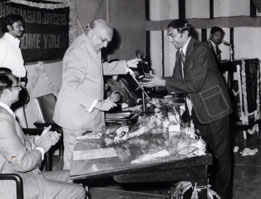

ફોટો-ગેલરી
|  | |
અમદાવાદ જે.સી. તરફથી ટેન આઉટસ્ટેન્ડિંગ યંગ પર્સનાલિટીનો ઍવોર્ડ અર્પણ કરતાં શ્રી જયકૃષ્ણ હરિવલ્લભદાસ |
ઇંગ્લૅંન્ડના સુકાની ટોની ગ્રેગ સાથે |
કપિલદેવ સાથે એક મુલાકાત |
લલિતાદેવી શાસ્ત્રી સાથે |
યજ્ઞેશ હ. શુક્લ પત્રકારત્વ ઍવોર્ડ અર્પણ કરતાં વાસુદેવ મહેતા |
પૂ. પાંડુરંગ આઠવલે દાદા દ્વારા દિવાળીબહેન મોહનલાલ મહેતા ઍવોર્ડ |
ક્રિકેટ સમીક્ષક ક્રાઉફડ વ્હાઈટ સાથે |
ઇંગ્લૅન્ડની સંસ્થાઓ તરફથી હેમચંદ્રાચાર્ય ઍવોર્ડનો પ્રતિભાવ |
મુંબઈમાં આચાર્ય મહાપ્રજ્ઞજીની નિશ્રામાં ભારત મહામંડળ જૈન તરફથી સર્વપ્રથમ જૈન ગૌરવ ઍવોર્ડ |
ગુજરાતી સાહિત્ય પરિષદના અધિવેશનમાં કલાગુર્જરી તરફથી કલિકાલ સર્વજ્ઞ શ્રી હેમચંદ્રાચાર્ય ઍવોર્ડ મેળવતા શ્રી કુમારપાળ દેસાઈ |
ગુજરાતી સાહિત્ય પરિષદના માંડવી ખાતેના 24મા જ્ઞાનસત્રમાં ગુજરાતી સાહિત્ય પરિષદનું પ્રમુખપદ સંભાળતા કુમારપાળ દેસાઈને અભિનંદન આપતાં યજમાન સંસ્થાના શ્રી કાંતિસેન શ્રોફ. |
ગુજરાત સાહિત્ય સભા તરફથી શ્રી ધનજી કાનજી ગાંધી ચંદ્રક અર્પણ |
બકિંગહામ પેલેસમાં |
હ્યુમન સોસાયટી ઓફ ઇન્ડિયા દ્વારા લાઈફ ટાઈમ એચિવમેન્ટ ઍવોર્ડ |
 |
 |
એન્ટવર્પ પ્રોવિન્સના ગવર્નર કેથી બકર્સ સાથે |
મહારાષ્ટ્ર રાજ્ય ગુજરાતી સાહિત્ય અકાદમી દ્વારા વીર નર્મદ પુરસ્કાર સ્વીકારતા ડૉ. કુમારપાળ દેસાઈ |